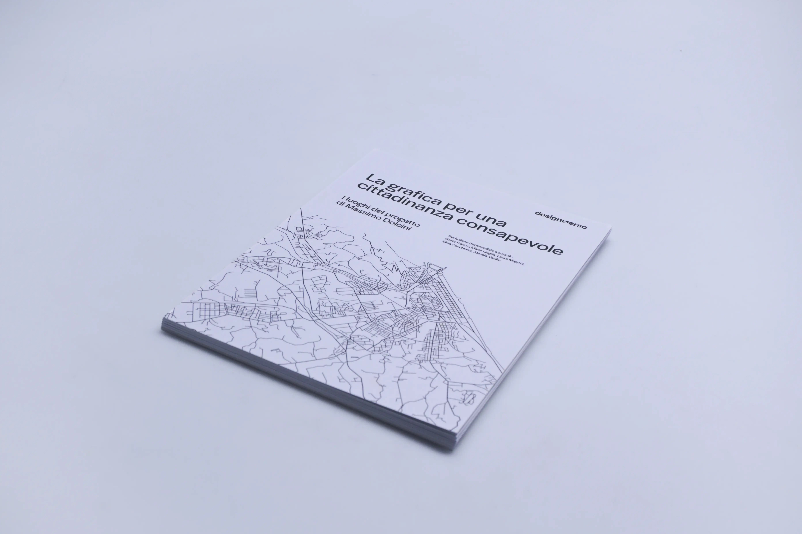
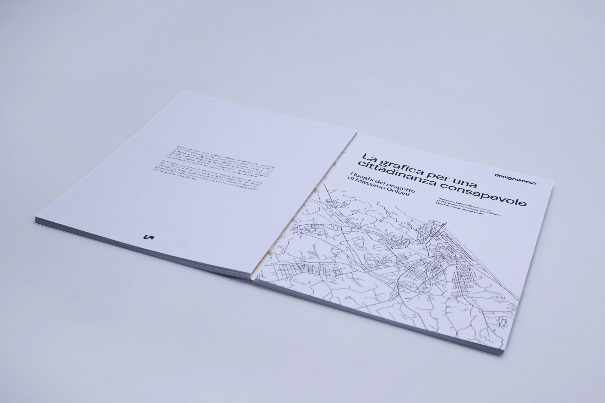

This editorial project forms part of DesignVerso, a series of educational monographs created to explore design through print prototypes and augmented content. The work focuses on Massimo Dolcini and his text "La grafica per una cittadinanza consapevole", reinterpreting the original essay in a contemporary magazine format. At the heart of the research lies an unpublished dialogue between Dolcini and Giancarlo Iliprandi, analysed through a system of artefacts that blend epistolary narrative, cartography and multimedia content to offer a multidimensional view of the author.



We structured the project around an editorial adaptation, transforming the original book into a magazine with a minimalist, clean aesthetic. The magazine’s central theme is its connection to the local area: each chapter is named after a street between Pesaro and Fano, places that symbolise Dolcini’s life. These interludes are accompanied by stylised city maps that guide the reader through the author’s professional and personal geography. The use of colour has been carefully calibrated, acting as a functional cue to distinguish the different sections without ever overshadowing the original textual and visual content.
The analysis of the relationship between Massimo Dolcini and Giancarlo Iliprandi, on the other hand, has been explored in a special 16th edition and a map of the places they shared. We chose to depict their connection through a fictional yet plausible narrative: an envelope containing an imaginary exchange of letters written by us. On the back of each letter, we have included a work representative of each designer, creating a visual connection between words and images. The envelope is placed within a detailed map which, via a key, highlights the key meeting points in their professional partnership.
To enhance the reading experience, we have included a range of augmented content accessible via QR codes. This includes a video interview with Massimo Dolcini, an in-depth photo gallery and an exclusive audio interview with Angela Scatigna, the author’s wife. This integration of print and digital media thus overcomes the limitations of the physical medium, offering a dynamic archive that honours Dolcini’s memory and his vision of a civil and socially conscious graphic design.